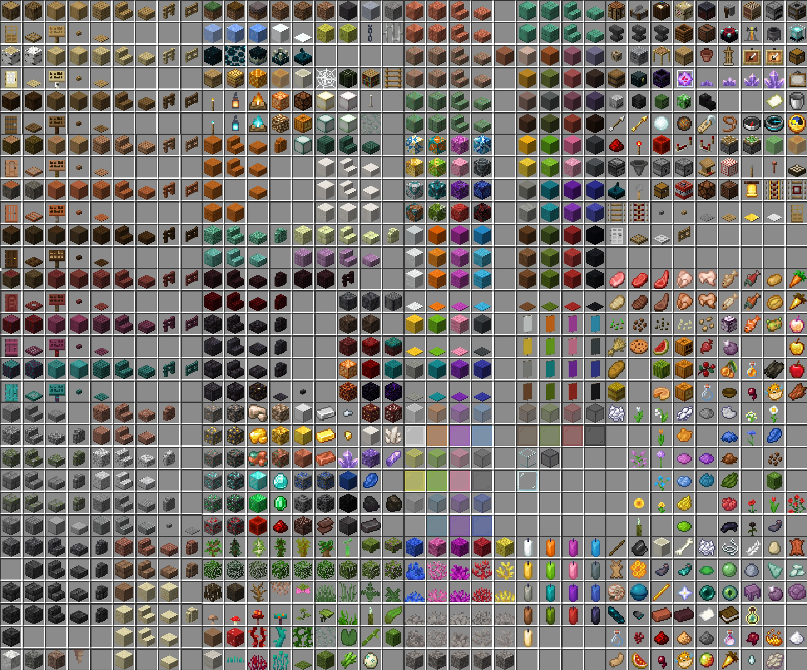

Les différents types de blocs
Dans Minecraft, pour pouvoir avancer dans le jeu il faudra récolter différents blocs qui permettent de s'améliorer
En effet, il existe différents blocs avec chacunes comportant des utilisations différentes pour le joueur ou la joueuse

Les Matériaux:
Dans plus des 900 blocs de Minecraft on rencontre une catégorie très spécifique, celle des matériaux comme :
- Les minerais que l'on rencontre dans des grottes ou des mines comme l'or, le fer, le diamant etc...
- La nourriture permettant de régénérer nos points de vie afin de ne pas mourir
- Les plantes comme le cactus ou la canne à sucre pas forcément important mais utile pour créer du papier et faire des cartes
Ensuite nous avons les blocs de construction:
ce sont des blocs permettant de construire des maisons ou des arbres et selon le style que l'on veut on peut faire tout type de base :
- Des cabanes en bois dans les arbres ou sur le sol
- Des bases en pierre ou en argile dans les déserts ou au bord des mers
- Des habitats farfelus avec des blocs d'or et de diamant (malgré qu'en survie ce ne soit jamais fait)
Enfin nous pouvons trouver des :
Blocs à utilisation précise
Sur Minecraft si l'on a les ressources suffisantes mais que l'on a rien pour transformer ces produits alors cela ne sert à rien
C'est pour cette raison qu'il y a la possibilité de fabriquer à partir d'une table de craft 
Grâce à ce bloc à utilisation précise nous pouvons en créer d'autres de catégories différentes
Par exemple :
- Des blocs afin de pouvoir cuire des aliments ou fondre des minerais
- Des blocs pour enchanter et affiner les armes afin de devenir plus fort
- Des objets diverses et variées comme des perles de téléportation, des boussoles, des ailes pour voler etc...